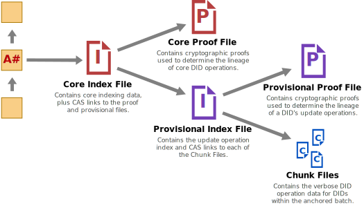

§ Sidetree
Specification Status: Editor’s Draft v0.1.0
Latest published version: identity.foundation/sidetree/spec
- Editors:
- Daniel Buchner (Microsoft)
- Orie Steele (Transmute)
- Contributors:
- Henry Tsai (Microsoft)
- Troy Ronda (SecureKey)
- Mudassir Ali (Microsoft)
- Guillaume Dardelet (Transmute)
- Isaac Chen (Microsoft)
- Christian Lundkvist (Consensys)
- Kyle Den Hartog (Mattr)
- Participate:
- GitHub repo
- File a bug
- Commit history
Sidetree REST API specification: identity.foundation/sidetree/api
§ Abstract
Sidetree is a protocol for creating scalable decentralized public key infrastructure (DPKI) networks that can run atop of any existing decentralized ledger system (e.g. Bitcoin) and be as open, public, and permissionless as the underlying ledger they utilize. The protocol allows users to create globally unique, user-controlled identifiers and manage their associated metadata, all without the need for centralized authorities or trusted third parties. The syntax of the identifier and accompanying data model used by the protocol is conformant to that defined by W3C Decentralized Identifiers. Implementations of the protocol can be codified as their own distinct DID Methods and registered in the W3C DID Method Registry.
§ Introduction
This section is non-normative
Decentralized ledgers (e.g. Bitcoin) introduced the first-ever solution to the linear chronological oracle problem, which unlocked the ability to create robust decentralized identifier networks. However, current approaches that utilize these ledger systems to create decentralized identifier networks suffer from severely limited transactional volumes and other performance issues. Sidetree is a ‘Layer 2’ protocol that runs atop decentralized ledger systems to enable scalable W3C Decentralized Identifier (DID) implementations that can be fully open, public, and permissionless. Sidetree is able to do all this without requiring trusted intermediaries, centralized authorities, special protocol tokens, or secondary consensus mechanisms, while preserving the core attributes of decentralization and immutability of the underlying ledger systems it is implemented on.
Architecturally, Sidetree-based DID Method implementations are overlay networks composed of independent peer nodes (Sidetree nodes) that observe an underlying decentralized ledger (as illustrated under Network Topology), replicate ledger-anchored DID PKI state operations, and execute against that data a set of deterministic protocol rules to produce an eventually strongly consistent view of all DIDs in the network. The Sidetree protocol defines a core set of DID PKI state change operations, structured as delta-based Conflict-Free Replicated Data Types (i.e. Create, Update, Recover, or Deactivate), that mutate a Decentralized Identifier’s DID Document state. Sidetree nodes that participate in writing operations into the overlay network do so by anchoring Content-Addressable Storage (CAS) (e.g. IPFS) references to aggregated bundles of operations in an underlying ledger. The ledger acts as a linear chronological sequencing oracle, which the protocol leverages to order DID PKI operations in an immutable history all observing nodes can replay and validate. It is this ability to replay the precise sequence of DID PKI state change events, and process those events using a common set of deterministic rules, that allows Sidetree nodes to achieve a consistent view of DIDs and their DID Document states, without requiring any additional consensus mechanism.
§ Terminology
| Term | Description |
|---|---|
| Ledger | A decentralized linear sequencing oracle (e.g. Bitcoin) that can be used to anchor the PKI state transformations of Decentralized Identifiers (DIDs) in a shared record that can be deterministically replayed by observers to derive the current PKI state of DIDs. |
| Anchor File | JSON Document containing proving and index data for Create, Recovery, and Deactivate operations, and a CAS URI for the associated Map File. This file is anchored to the target ledger. |
| Map File | JSON Document containing Update operation proving and index data, as well as CAS URI for Chunk File chunks. |
| Chunk File | JSON Document containing all verbose operation data for the corresponding set of DIDs specified in the related Map File. |
| CAS | Content-addressable storage protocol/network (e.g. IPFS) |
| CAS URI | The unique content-bound identifier used to locate a resource via the CAS protocol/network (e.g. IPFS) |
| Commit Value | A chosen value that is used with a commitment scheme |
| Commitment | The output of a commitment scheme |
| Commitment Scheme | A cryptographic primative that allows one to commit to a chosen value, known as the commit value resulting in the generation of a commitment. A commitment can then be
shared without revealing the commit value forming a
proof of commitment where the possessor of the commit
value can then later reveal the commit value proving the
original commitment. |
| DID Document | JSON Document containing public key references, service endpoints, and other PKI metadata that corresponds to a given DID (as defined in the W3C DID Specification). |
| DID Suffix | The unique identifier string within a DID URI. e.g. The unique suffix of
did:sidetree:123 would be 123. |
| DID Suffix Data | Data required to deterministically generate a DID. |
| Multihash | Protocol for differentiating outputs from common cryptographic hash functions, addressing size + encoding considerations: https://multiformats.io/multihash/ |
| DID Operation | Set of delta-based modifications that change the state of a DID Document when applied. |
| Operation Request | JWS formatted request sent to a Sidetree Node to include a DID Operation in a batch of operations. |
| Operation Key Pair | A cryptographic key used to produce an Operation Request JWS. Public key representation MAY be present in the DID Document. Public key representation MUST be used to produce Operation Request commitment. |
| Recovery Key Pair | A cryptographic key used to produce an Operation Request of type Recover or Deactivate. Public key representation MAY be present in the DID Document. Public key representation MUST be used to produce Operation Request commitment. |
| Public Key Commitment | The resulting commitment obtained by applying the defined commitment scheme to a public key |
| Recovery Commitment | The resulting commitment obtained by applying the defined commitment scheme to the public key of a recovery key pair |
| Sidetree Node | Executable code that implements all the required components, functionality, and rules specified in the Sidetree protocol specification. |
| Transaction | Ledger transaction that anchors a set of Sidetree operations, via a CAS URI for an associated Anchor File. |
| Anchor String | The string anchored to the ledger, composed of the CAS URI to the Anchor File, prefixed with the declared operation count . |
| Ledger Time | The deterministic logical clock variable manifested in the underlying ledger system that can be used as a deterministic chronological reference (e.g. Bitcoin block numbers). |
| Transaction Number | A monotonically increasing number deterministically ordered and assigned to every transaction relative to its position in Ledger Time. |
| Light Node | A node that downloads and processes only Anchor Files and Map Files on a proactive basis, waiting until resolution time to download and process the Chunk File related to a given DID. This type of configuration enables a node to operate trustlessly while consuming approximately one order of magnitude less storage. |
§ Protocol Versioning
The rules and parameters of the Sidetree protocol MAY change in the future, resulting in new versions of the specification. The Sidetree specification and reference implementation follow SemVer 2.0.
Versions of the specification can be found on the Decentralized Identity Foundation’s website at the following version-based paths:
Latest Draft
https://identity.foundation/sidetree/spec/
Specific Versions
https://identity.foundation/sidetree/spec/v<major>.<minor>.<patch>/
Versions of the Sidetree reference implementation are also provided as npm modules and GitHub releases:
{
"name": "@decentralized-identity/sidetree",
"version": "<major>.<minor>.<patch>",
...
§ Version Segment Definitions
- Major: Major protocol evolution, with breaking protocol advancements so large they warrant incrementing the major version.
- Minor: Critical updates, protocol forking changes, or security patches that require all nodes to upgrade.
- Patch: Non-critical changes that do not require nodes to upgrade.
§ New Version Activation
New versions of the protocol, or modifications to parameter values by implementers, MUST be activated at a specified Ledger Time so all nodes can remain in sync by enforcing the same ruleset and parameters beginning at the same logical starting point. All transactions that occur after the specified Ledger Time will adhere to the associated version’s rules and parameters until a newer version of the protocol is defined and implemented at a future Ledger Time.
§ Default Parameters
Each version of the protocol will define a set of protocol rules and parameters with default suggested values. The following are the parameters used by this version of the Sidetree protocol - implementers MAY choose different options than the defaults listed below:
| Protocol Parameter | Description | Suggested Defaults |
|---|---|---|
HASH_ALGORITHM |
Algorithm for generating hashes of protocol-related values. | SHA256 |
HASH_PROTOCOL |
Protocol for generating hash representations in Sidetree implementations, using the HASH_ALGORITHM |
Multihash |
DATA_ENCODING_SCHEME |
Encoding selected for various data (JSON, hashes, etc.) used within an implementation, the output of which MUST be in ASCII format. | Base64URL |
KEY_ALGORITHM |
Asymmetric public key algorithm for signing DID operations. Must be a valid JWK
crv. |
secp256k1 |
SIGNATURE_ALGORITHM |
Asymmetric public key signature algorithm. Must be a valid JWS alg. |
ES256K |
CAS_PROTOCOL |
The CAS network protocol used within an implementation. | IPFS |
CAS_URI_ALGORITHM |
Algorithm for generating unique content-bound identifiers for the implementation-selected CAS protocol | IPFS CID |
COMPRESSION_ALGORITHM |
File compression algorithm | ZIP |
REVEAL_VALUE |
Cryptographically random value to be revealed in the next operation. | 100 bytes |
GENESIS_TIME |
The point in the target ledger’s transaction history at which Sidetree implementation is first activated (e.g. block number in a blockchain). | 630000 |
MAX_ANCHOR_FILE_SIZE |
Maximum compressed Anchor File size. | 1 MB |
MAX_MAP_FILE_SIZE |
Maximum compressed map file size. | 1 MB |
MAX_CHUNK_FILE_SIZE |
Maximum compressed chunk file size. | 10 MB |
MAX_ENCODED_HASH_LENGTH |
Maximum accepted string length of an encoded hash. | 100 bytes |
MAX_OPERATION_SIZE |
Maximum uncompressed operation size. | 1 kb |
MAX_OPERATION_COUNT |
Maximum number of operations per batch. | 10,000 |
§ Common Functions
The following is a list of functional procedures that are commonly used across the protocol. These functions are defined once here and referenced throughout the specification, wherever an implementer must invoke them to comply with normative processes.
§ Hashing Process
All data hashed within the bounds of the protocol follow the same procedural steps, and yield a consistently encoded output. Given a data value, the following steps are used to generated a hashed output:
- Generate a hash of the data value using the
HASH_PROTOCOLwith theHASH_ALGORITHM. - Encode the resulting output using the
DATA_ENCODING_SCHEME. - Return the encoded hashing output.
Pseudo-code example using current protocol defaults:
let HashingOutput = Base64URL( Multihash(DATA, 'sha2-256') );
§ Commitment Schemes
Commitment schemes are used by the Sidetree protocol in important ways to preserve the integrity of operations and assist in recovery.
§ Public Key Commitment Scheme
The following steps define the commitment scheme for generating a public key commitment from a public key.
- Encode the public key into the form of a valid JWK.
- Canonicalize the JWK encoded public key using the JSON Canonicalization Scheme.
- Apply the defined HASH_ALGORITHM to the canonicalized public key to produce the public key commitment.
Implementers MUST NOT re-use public keys across different commitment invocations.
§ Network Topology
The figure below illustrates the three primary components of a Sidetree-based DID overlay network:
- The underlying ledger system that serves as the global anchoring and linear sequencing system for DID operations.
- The Sidetree nodes themselves, which interact with the ledger system to anchor operations, fetch and replicate data from the CAS network, and process operations in accordance with the protocol deterministic ruleset.
- An integrated Content-Addressable Storage (CAS) network layer Sidetree nodes use to distribute and replicate DID operation files.

§ File Structures
The protocol defines the following three file structures, which house DID operation data and are designed to support key functionality to enable light node configurations, minimize permanently retained data, and ensure performant resolution of DIDs.
§ Anchor File
Anchor Files contain Create, Recover, and Deactivate operation values, as well as a CAS URI for the related Sidetree Map file (detailed below). As the name suggests, Anchor Files are anchored to the target ledger system via embedding a CAS URI in the ledger’s transactional history.
{
"map_file_uri": CAS_URI,
"writer_lock_id": OPTIONAL_LOCKING_VALUE,
"operations": {
"create": [
{
"suffix_data": { // Base64URL encoded
"delta_hash": DELTA_HASH,
"recovery_commitment": COMMITMENT_HASH
}
},
{...}
],
"recover": [
{
"did_suffix": SUFFIX_STRING,
"signed_data": { // Base64URL encoded, compact JWS
"protected": {...},
"payload": {
"recovery_commitment": COMMITMENT_HASH,
"recovery_key": JWK_OBJECT,
"delta_hash": DELTA_HASH
},
"signature": SIGNATURE_STRING
}
},
{...}
],
"deactivate": [
{
"did_suffix": SUFFIX_STRING,
"signed_data": { // Base64URL encoded, compact JWS
"protected": {...},
"payload": {
"did_suffix": SUFFIX_STRING,
"recovery_key": JWK_OBJECT
},
"signature": SIGNATURE_STRING
}
},
{...}
]
}
}
A valid Anchor File is a JSON document that MUST
NOT exceed the MAX_ANCHOR_FILE_SIZE, and composed as follows:
- The Anchor File MUST contain a
map_file_uriproperty if the batch of transactions being anchored contains any Create, Recovery, or Update operations, and its value MUST be a CAS URI for the related Map File. If the batch of transactions being anchored is only comprised of Deactivate operations, themap_file_uriproperty MUST NOT be present. - The Anchor File MAY contain a
writer_lock_idif the implementation chooses to implement a value locking scheme for economically based network protection, and its value MUST be defined by the implementation to reflect whatever values the are required to facilitate the necessary ledger and operation-level evaluations. - If the set of operations to be anchored contain any Create, Recover, or Deactivate operations, the Anchor File MUST contain an
operationsproperty, and its value MUST be an object composed as follows:- If there are any Create operations to be included in the Anchor File:
- The
operationsobject MUST include acreateproperty, and its value MUST be an array. - For each Create operation to be included in the
createarray, herein referred to as Anchor File Create Entries, use the following process to compose and include a JSON object for each entry:- Each object must contain a
suffix_dataproperty, and its value MUST be a Create Operation Suffix Data Object.
- Each object must contain a
- The Anchor File MUST NOT include multiple Create operations that produce the same DID Suffix.
- The
- If there are any Recovery operations to be included in the Anchor
File:
- The
operationsobject MUST include arecoverproperty, and its value MUST be an array. - For each Recovery operation to be included in the
recoverarray, herein referred to as Anchor File Recovery Entries, use the following process to compose and include entries:- The object MUST contain a
did_suffixproperty, and its value MUST be the DID Suffix of the DID the operation pertains to. An Anchor File MUST NOT contain more than one operation of any type with the same DID Suffix. - The object MUST contain a
signed_dataproperty, and its value MUST be a Recovery Operation Signed Data Object.
- The object MUST contain a
- The
- If there are any Deactivate operations to be included in the
Anchor File:
- The
operationsobject MUST include adeactivateproperty, and its value MUST be an array. - For each Deactivate operation to be included in the
deactivatearray, use the following process to compose and include entries:- The object MUST contain a
did_suffixproperty, and its value MUST be the DID Suffix of the DID the operation pertains to. An Anchor File MUST NOT contain more than one operation of any type with the same DID Suffix. - The object MUST contain a
signed_dataproperty, and its value MUST be a Deactivate Operation Signed Data Object.
- The object MUST contain a
- The
- If there are any Create operations to be included in the Anchor File:
§ Map File
Map Files contain Update operation proving data, as well as CAS URI links to Chunk Files.
{
"chunks": [
{ "chunk_file_uri": CHUNK_HASH },
{...}
],
"operations": {
"update": [
{
"did_suffix": DID_SUFFIX,
"signed_data": { // Base64URL encoded, compact JWS
"protected": {...},
"payload": {
"update_key": JWK_OBJECT,
"delta_hash": DELTA_HASH
},
"signature": SIGNATURE_STRING
}
},
{...}
]
}
}
A valid Map File is a JSON document that MUST
NOT exceed the MAX_MAP_FILE_SIZE, and composed as follows:
- The Map File MUST contain a
chunksproperty, and its value MUST be an array of Chunk Entries for the related delta data for a given chunk of operations in the batch. Future versions of the protocol will specify a process for separating the operations in a batch into multiple Chunk Entries, but for this version of the protocol there MUST be only one Chunk Entry present in the array. Chunk Entry objects are composed as follows:- The Chunk Entry object MUST contain a
chunk_file_uriproperty, and its value MUST be a URI representing the corresponding CAS file entry, generated via theCAS_URI_ALGORITHM.
- The Chunk Entry object MUST contain a
- If there are any Update operations to be included in the Map File, the Map File MUST include an
operationsproperty, and its value MUST be an object composed as follows:- The
operationsobject MUST include anupdateproperty, and its value MUST be an array. - For each Update operation to be included in the
updatearray, herein referred to as Map File Update Entries, use the following process to compose and include entries:- The object MUST contain an
did_suffixproperty, and its value MUST be the DID Suffix of the DID the operation pertains to. - The object MUST contain a
signed_dataproperty, and its value MUST be an Update Operation Signed Data Object.
- The object MUST contain an
- The
§ Chunk Files
Chunk Files are JSON Documents, compressed via the COMPRESSION_ALGORITHM contain Sidetree Operation source data, which are composed of delta-based CRDT entries that modify the state of a Sidetree identifier’s DID Document.
For this version of the protocol, there will only exist a single Chunk File that contains all the state modifying data for all operations in the included set. Future versions of the protocol will separate the total set of included operations into multiple chunks, each with their own Chunk File.
{
"deltas": [
{ // JSON.stringify()-ed, and Base64URL encoded
"patches": PATCH_ARRAY,
"update_commitment": COMMITMENT_HASH
},
...
]
}
In this version of the protocol, Chunk Files are constructed as follows:
-
The Chunk File MUST include a
deltasproperty, and its value MUST be an array containing Chunk File Delta Entry objects. -
Each Chunk File Delta Entry MUST be a
Base64URLencoded object, assembled as follows:- The object MUST contain a
patchesproperty, and its value MUST be an array of DID State Patches. - The payload MUST contain an
update_commitmentproperty, and its value MUST be the next Update Commitment generated during the operation process associated with the type of operation being performed.
- The object MUST contain a
-
Each Chunk File Delta Entry MUST be appended to the
deltasarray as follows, in this order:- If any Create operations were present in the associated Anchor File, append all Create Operation Delta Objects in the same index order as their matching Anchor File Create Entry.
- If any Recovery operations were present in the associated Anchor File, append all Recovery Operation Delta Objects in the same index order as their matching Anchor File Recovery Entry.
- If any Update operations were present in the associated Map File, append all Update Operation Delta Objects in the same index order as their matching Map File Update Entry.
§ DID URI Composition
DID Methods based on the Sidetree protocol all share the same identifier format. The unique identifier segment of a Sidetree-based DID, known as the DID Suffix, is derived by using the Hashing Process to generate a hash value from the decoded Create Operation Suffix Data Object. The DID Suffix is cryptographically bound to the initial PKI state of the DID, which means Sidetree DIDs are self-certifying. As a result, a person or entity who creates a Sidetree-based DID knows their unique identifier at the moment of generation, and it is cryptographic secured for instant use (for more on the instant use capabilities of Sidetree DIDs, see Unpublished DID Resolution).
To generate the Short-Form DID URI of a
Sidetree DID, use the Hashing Process to generate a hash of the decoded
Create Operation Suffix Data Object. The following is
an example of a resulting colon (:) separated DID URI composed of the URI scheme
(did:), Method identifier (sidetree:), and unique identifier string
(EiBJz4...):
did:sidetree:EiBJz4qd3Lvof3boqBQgzhMDYXWQ_wZs67jGiAhFCiQFjw
§ Long-Form DID URIs
DID URI strings may include additional values that are used in resolution and other activities. The standard way to pass these values are through DID URL Parameters, as defined by the W3C Decentralized Identifiers specification.
Many DID Methods require a period of time (which may be indefinite) between the generation of a DID and
the DID being anchored/propagated in the underlying ledger system, and other layers for which
propagation delays may apply. Sidetree introduces the initial-state DID URL
Parameter to enable resolution of unpropagated and unpublished DIDs. To use a Sidetree-based
DID immediately after generation, the controller MUST include the
initial-state DID URL Parameter in the DID URI string, with the value being a
string composed of the Create Operation Suffix Data
Object and the Create Operation Delta
Object, separated by a period (.), as follows:
did:METHOD:<did-suffix>?initial-state=<create-suffix-data-object>.<create-delta-object>
This DID URL Parameter mechanism of conveying the initial self-certifying state of a DID, known as the Long-Form DID URI supports the following features and usage patterns:
- Resolving the DID Documents of unpublished DIDs.
- Authenticating with unpublished DIDs.
- Signing and verifying credentials signed against unpublished DIDs.
- After publication and propagation are complete, authenticating with either the Short-Form DID URI or Long-Form DID URI.
- After publication and propagation are complete, signing and verifying credentials signed against either the Short-Form DID URI or Long-Form DID URI.
§ JSON Web Signatures
Sidetree relies on JSON Web Signatures for authentication and integrity protection of DID Operations, accept for Create, with contains key material and is self certifying.
§ Signing
In addition to RFC7515, the following additional requirements MUST be observed by Sidetree Method implementeers.
kidMUST be present in the protected header.algMUST be present in the protected header, its value MUST NOT be none.- No additional members may be present in the protected header.
Here is an example of a decoded JWS header:
{
"kid": "did:example:123#_Qq0UL2Fq651Q0Fjd6TvnYE-faHiOpRlPVQcY_-tA4A",
"alg": "EdDSA"
}
It is recommended that kid be a DID URL. If it is not, method implementers might need to
rely on additional context to uniquely identify the associated verificationMethod.
§ Verifying
Regardless of which verification relationship a verificationMethod is associated with, the process of verifying a JWS linked to a DID is the same.
The JWS header is parsed and a kid is extracted.
- Iterate the verificationMethods, until a verificationMethod with
idequal tokidis found. - Convert the discovered verificationMethod to JWK if necessary.
- Perform JWS Verification using the JWK.
§ Operation Verification
Sidetree operations are considered valid when the JWS can be verified, and where the verificationMethod used is associated with the correct verification relationship.
operation, recovery are verification relationships for verifying sidetree
operations which sidetree DID Methods MUST support, and which MAY be exposed externally via the DID
Document or Resolver Method Meta Data.
An Update Operation MUST be signed by an
Operation Key Pair that is authorized for an update operation. The
public key of this key pair or a commitment to the public key MAY be exposed in the DID Document or
Resolver Meta Data, and MAY be associated with an operation verification relationship.
A Recover Operation MUST by signed by Recovery Key Pair that is authorized for a recovery operation. The
public key of this key pair or a commitment to the public key MAY be exposed in the DID Document or
Resolver Meta Data, and MAY be associated with a recovery verification relationship.
A Deactivate Operation MUST by signed
by Recovery Key Pair that is authorized for a recovery operation. The
public key of this key pair or a commitment to the public key MAY be exposed in the DID Document or
Resolver Meta Data, and MAY be associated with a recovery verification relationship.
If a verificationMethod with id matching the JWS kid is not present in the
expected collection, the sidetree operation is considered not valid.
Operations may be verified, and yet still rejected in the resolution process.
DID Core also defines verification relationships which sidetree DID Methods MAY support.
assertionMethod for use with Verifiable Credentials.
authentication for use with Verifiable Presentations, and general authentication flows.
capabilityInvocation and capabilityDelegation for use with Object Capabilities
used by Secure Data Stores / Encrypted Data vaults.
Operation Key and Recovery Key public key representations MAY be present in any verification relationship.
verificationMethod objects can be embedded, or referenced by id.
verificationMethod id can be a pure fragment, such as #key-0 or a well
formed URI, such as did:example:123#key-1. The later is much more common, and the
former may lead to interoperability issues.
It is not recommended to reuse verificationMethods for multiple verification relationships.
§ DID Operations
Sidetree-based DIDs support a variety of DID operations, all of which require the DID owner to generate specific data values and cryptographic material. The sections below describe how to perform each type of operation, and how those operations are represented in the CAS-replicated files that are anchored to the underlying ledger system.
While virtually all DID owners will engage User Agent applications on their local devices to perform these operations, most will not generate the anchoring transactions on the underlying ledger. Instead, most users will likely send the anchoring-related operation values they generate to external nodes for anchoring. This is relatively safe, because operations require signatures that an external node cannot forge. The only attack available to a rogue node operator is to not anchor the operations a DID owner sends them. However, the DID owner can detect this (via a scan of subsequent blocks) and send their operation to a different node or do it themselves, if they so desire.
This specification does not define an API for sending public DID operation values to third-party Sidetree nodes for external anchoring, as that is an elective activity has no bearing on the technical workings of the protocol, its capabilities, or its security guarantees.
Sidetree Methods MAY choose to expose protocol operation keys in the DID Document.
Sidetree Methods MAY rely on the DID Document data model when verifying protocol operations.
Operations other than Create contain a compact JWS. Dereferencing of key material used to verify the
JWS is a DID Method specific concern. Some methods may rely of the DID Document data model, others
may rely on an internal data model. Some methods may rely on kid of the form
did:example:123#fingerprint, others may not include a kid in the JWS, or
its value may be arbitrary. Support for specific alg fields is also DID Method
specific. Implementers are cautioned to choose support for specific alg values
carefully.
§ Create
Use the following process to generate a Sidetree-based DID:
- Generate a key pair using the defined
KEY_ALGORITHM, let this be known as the operation key pair. - Generate a public key commitment using the defined public key commitment scheme and public key of the generated operation key pair, let this resulting commitment be known as the update commitment.
- Generate an encoded representation of the following object using the implementation’s
DATA_ENCODING_SCHEME, herein referred to as the Create Operation Delta Object:{ "patches": [ PATCH_1, PATCH_2, ... ], "update_commitment": Update Operation Commitment }- The object MUST contain a
patchesproperty, and its value MUST be a JSON array of DID State Patches. - The object MUST contain an
update_commitmentproperty, and its value MUST be the update commitment as generated in step 2.
- The object MUST contain a
- Generate a key pair using the defined
KEY_ALGORITHM, let this be known as the recovery key pair, where the public key of this pair is used for generating the recovery commitment, and the private key for use in the next recovery operation. - Generate a public key commitment using the defined public key commitment scheme and public key of the generated recovery key pair, let this resulting commitment be known as the recovery commitment.
- Generate an encoded representation of the following object using the implementation’s
DATA_ENCODING_SCHEME, herein referred to as the Create Operation Suffix Data Object:{ "delta_hash": DELTA_HASH, "recovery_commitment": Recovery Commitment }- The object MUST contain a
delta_hashproperty, and its value MUST be a hash of the decoded Create Operation Delta Object (detailed above), generated via the Hashing Process. - The object MUST contain a
recovery_commitmentproperty, and its value MUST be the recovery commitment as generated in step 2.
- The object MUST contain a
Implementations MAY choose to define additional properties for inclusion in the Create Operation Suffix Data Object, but the presence of any properties beyond the standard properties or implementation-defined properties ARE NOT permitted.
Implementers MAY choose to canonicalize their Create Operation Suffix Data Objects prior
applying the DATA_ENCODING_SCHEME. This does not
affect the outcome or other components in the system that deal with this object.
§ Update
The following process must be used to update the state a Sidetree-based DID:
- Retrieve the Update Reveal Value that matches the previously anchored Update Commitment.
- Generate an encoded representation of the following object using the implementation’s
DATA_ENCODING_SCHEME, herein referred to as the Update Operation Delta Object, composed as follows:{ "patches": [ PATCH_1, PATCH_2, ... ], "update_commitment": Update Operation Commitment }- The object MUST contain a
patchesproperty, and its value MUST be an array of DID State Patches. - The object MUST contain a
update_commitmentproperty, and its value MUST be a new Update Commitment, the value of which will be revealed for the next Update operation.
- The object MUST contain a
- Generate an encoded representation of the following object using the implementation’s
DATA_ENCODING_SCHEME, herein referred to as the Update Operation Signed Data Object. The object MUST be a IETF RFC 7515 compliant compact JWS object with a signature that validates against a currently active operation key, and contains the following payload values:{ "protected": {...}, "payload": { "update_key": JWK_OBJECT, "delta_hash": DELTA_HASH }, "signature": SIGNATURE_STRING }- The JWS
payloadobject MUST include aupdate_keyproperty, and its value MUST be the JCS canonicalized IETF RFC 7517 compliant JWK representation matching the previous Update Commitment. - The JWS
payloadobject MUST contain adelta_hashproperty, and its value MUST be a hash of the decoded Update Operation Delta Object, generated via the Hashing Process.
- The JWS
§ Recover
Use the following process to recover a Sidetree-based DID:
- Retrieve the Recovery Key that matches the previously anchored Recovery Commitment. This value will be used in constructing an Anchor File Recovery Entry for the DID being recovered.
- Generate a new recovery key pair, which MUST
NOT be the same key used in any previous operations, via the
KEY_ALGORITHM, retaining the Next Recovery Public Key for use in generating the next Recovery Commitment, and the private key for use in the next Recovery operation. - Create a Recovery Commitment using the Hashing Process to generate a hash value from the JCS canonicalized IETF RFC 7517 JWK representation of the Next Recovery Public Key, and retain the hash value for inclusion in an Anchor File.
- Generate a new operation key pair, which SHOULD NOT be the same
key used in any previous operations, via the
KEY_ALGORITHM, retaining the Next Update Public Key for use in generating the next Update Commitment, and the private key for use in the next Update operation. - Create an Update Commitment using the Hashing Process to generate a hash value from the JCS canonicalized IETF RFC 7517 JWK representation of the Next Update Public Key, and retain the hash value for inclusion in the Recovery Operation Delta Object(as described below).
- Generate and retain a
COMMITMENT_VALUE, in adherence with the Commitment Schemes directives, for use in the next Update operation, herein referred to as the Update Reveal Value. - Generate an Update Commitment using the Hashing Process, in adherence with the Commitment Schemes directives, to generate a hash of the Update Reveal Value, and retain the resulting hash value for inclusion in an Anchor File.
- Generate an encoded representation of the following object using the implementation’s
[
DATA_ENCODING_SCHEME], herein referred to as the Recovery Operation Delta Object, composed as follows:{ "patches": [ PATCH_1, PATCH_2, ... ], "update_commitment": Update Operation Commitment }- The object MUST contain a
patchesproperty, and its value MUST be an array of DID State Patches. - The object MUST contain a
update_commitmentproperty, and its value MUST be the Update Commitment, as described above.
- The object MUST contain a
- Generate an encoded representation of the following object using the implementation’s
DATA_ENCODING_SCHEME, herein referred to as the Recovery Operation Signed Data Object. The object MUST be a IETF RFC 7515 compliant compact JWS object with a signature that validates against the currently active recovery key, and contains the followingpayloadvalues:{ "protected": {...}, "payload": { "recovery_commitment": Recovery Commitment, "recovery_key": JWK_OBJECT, "delta_hash": DELTA_HASH }, "signature": SIGNATURE_STRING }- The JWS
payloadobject MUST contain arecovery_commitmentproperty, and its value MUST be the next Recovery Commitment, as described above. - The JWS
payloadobject MUST include arecovery_keyproperty, and its value MUST be the JCS canonicalized IETF RFC 7517 compliant JWK representation matching the previous Recovery Commitment. - The JWS
payloadobject MUST contain adelta_hashproperty, and its value MUST be a hash of the decoded Recovery Operation Delta Object, generated via the Hashing Process.
- The JWS
§ Deactivate
The following process must be used to deactivate a Sidetree-based DID:
- Retrieve the Recovery Reveal Value that matches the previously anchored Recovery Commitment.
- Generate an encoded representation of the following object using the implementation’s
DATA_ENCODING_SCHEME, herein referred to as the Deactivate Operation Signed Data Object. The object MUST be a IETF RFC 7515 compliant compact JWS object with a signature that validates against the currently active recovery key, and contains the following payload values:{ // Base64URL encoded, compact JWS "protected": {...}, "payload": { "did_suffix": SUFFIX_STRING, "recovery_key": JWK_OBJECT }, "signature": SIGNATURE_STRING }- The JWS
payloadobject MUST contain adid_suffixproperty, and its value MUST be the DID Suffix of the DID the operation pertains to. - The JWS
payloadobject MUST contain arecovery_keyproperty, and its value MUST match the last Recovery Commitment.
- The JWS
§ DID State Patches
Sidetree defines a general format for patching DID State, called Patch Actions, for describing mutations of a DID’s metadata state. Sidetree further defines a standard set of Patch Actions (below) implementers MAY use to facilitate patching within their implementations. Support of the standard set of Patch Actions defined herein IS NOT required, but implementers MUST use the Patch Action format for defining patch mechanisms within their implementation. The general Patch Action format is defined as follows:
{
"action": "add-public-keys",
...
}
{
"action": "-custom-action",
...
}
- Patch Actions MUST be represented as JSON objects.
- Patch Action objects MUST include an
actionproperty, and its value SHOULD be one of the standard Patch Action types listed in below, or, if the implementer chooses to create a custom Patch Action, a kebab-case string (dash-delimited lowercase words) with a leading dash, to indicate a custom Patch Action, for example:-custom-action.add-public-keysremove-public-keysadd-servicesremove-servicesietf-json-patch
§ Standard Patch Actions
The following set of standard Patch Actions are specified to help align on a common set of Patch Actions that provide a predictable usage patter across Sidetree-based DID Method implementations.
§ add-public-keys
{
"action": "add-public-keys",
"public_keys": [
{
"id": "key1",
"purpose": ["auth"],
"type": "EcdsaSecp256k1VerificationKey2019",
"jwk": {...}
}
]
}
The add-public-keys Patch Action describes the addition of cryptographic keys
associated with a given DID. For any part of an add-public-keys Patch Action to be
applied to the DID’s state, all specified conditions MUST be met for
all properties and values, else the patch MUST be discarded in its
entirety. To construct an add-public-keys patch, compose an object as follows:
- The object MUST include an
actionproperty, and its value MUST beadd-public-keys. - The object MUST include a
public_keysproperty, and its value MUST be an array. - Each key being added MUST be represented by an entry in the
public_keysarray, and each entry must be an object composed as follows:- The object MUST include an
idproperty, and its value MUST be a string with no more than fifty (50) ASCII encoded characters. If the value is not of the correct type or exceeds the specified length, the entire Patch Action MUST be discarded, without any of it being used to modify the DID’s state. - The object MUST include a type property, and its value
SHOULD be the identifier type string of a registered Cryptographic Suite that
supports JWK representations - for example:
EcdsaSecp256k1VerificationKey2019JwsVerificationKey2020
- The object MUST include a
jwkproperty, and its value MUST be a public key expressed as a IETF RFC 7517 compliant JWK representation for aKEY_ALGORITHMsupported by the implementation. If the value is not a compliant JWK representation, the entire Patch Action MUST be discarded, without any of it being used to modify the DID’s state. - The object MUST include a
purposeproperty, and its value MUST be an array that includes one or more of the strings listed below. If the value is not of the correct type or contains any string not listed below, the entire Patch Action MUST be discarded, without any of it being used to modify the DID’s state.general: the key MUST be included in thepublic_keyssection of the resolved DID Document.auth: the key MUST be included in theauthenticationsection of the resolved DID Document, as follows:- If the
generalpurpose value IS NOT present in thepurposearray, the key descriptor object MUST be included directly in theauthenticationsection of the resolved DID Document. - If the
generalpurpose value IS present in thepurposearray, the key descriptor object MUST be directly included in thepublic_keyssection of the resolved DID Document, and MUST be included by relative DID URL reference in theauthenticationsection.
- If the
agreement: the key MUST be included in thekeyAgreementsection of the resolved DID Document, as follows:- If the
generalpurpose value IS NOT present in thepurposearray, the key descriptor object MUST be included directly in thekeyAgreementsection of the resolved DID Document. - If the
generalpurpose value IS present in thepurposearray, the key descriptor object MUST be directly included in thepublic_keyssection of the resolved DID Document, and MUST be included by relative DID URL reference in thekeyAgreementsection.
- If the
assertion: the key MUST be included in theassertionMethodsection of the resolved DID Document, as follows:- If the
generalpurpose value IS NOT present in thepurposearray, the key descriptor object MUST be included directly in theassertionMethodsection of the resolved DID Document. - If the
generalpurpose value IS present in thepurposearray, the key descriptor object MUST be directly included in thepublic_keyssection of the resolved DID Document, and MUST be included by relative DID URL reference in theassertionMethodsection.
- If the
delegation: the key MUST be included in thecapabilityDelegationsection of the resolved DID Document, as follows:- If the
generalpurpose value IS NOT present in thepurposearray, the key descriptor object MUST be included directly in thecapabilityDelegationsection of the resolved DID Document. - If the
generalpurpose value IS present in thepurposearray, the key descriptor object MUST be directly included in thepublic_keyssection of the resolved DID Document, and MUST be included by relative DID URL reference in thecapabilityDelegationsection.
- If the
invocation: the key MUST be included in thecapabilityInvocationsection of the resolved DID Document, as follows:- If the
generalpurpose value IS NOT present in thepurposearray, the key descriptor object MUST be included directly in thecapabilityInvocationsection of the resolved DID Document. - If the
generalpurpose value IS present in thepurposearray, the key descriptor object MUST be directly included in thepublic_keyssection of the resolved DID Document, and MUST be included by relative DID URL reference in thecapabilityInvocationsection.
- If the
- The object MUST include an
§
remove-public-keys
{
"action": "remove-public-keys",
"public_keys": ["key1", "key2"]
}
The remove-public-keys Patch Action describes the removal of cryptographic keys
associated with a given DID. For any part of an remove-public-keys Patch Action to
be applied to the DID’s state, all specified conditions MUST be met
for all properties and values, else the patch MUST be discarded in its
entirety. To construct a remove-public-keys Patch Action, compose an object as
follows:
- The object MUST include an
actionproperty, and its value MUST beremove-public-keys. - The object MUST include a
public_keysproperty, and its value MUST be an array of key IDs that correspond with keys presently associated with the DID that are to be removed. If the value is not of the correct type or includes a string value that is not associated with a key in the document, the entire Patch Action MUST be discarded, without any of it being used to modify the DID’s state.
§
add-services
{
"action": "add-services",
"service_endpoints": [
{
"id": "sds1",
"type": "SecureDataStore",
"endpoint": "http://hub.my-personal-server.com"
},
{
"id": "sds2",
"type": "SecureDataStore",
"endpoint": "http://some-cloud.com/hub"
}
]
}
The add-services Patch Action describes the addition of Service Endpoints to a DID’s state. For
any part of an add-services Patch Action to be applied to the DID’s
state, all specified conditions MUST be met for all properties and
values, else the patch MUST be discarded in its entirety. To construct
an add-services patch, compose an object as follows:
- The object MUST include an
actionproperty, and its value MUST beadd-services. - The object MUST include a
service_endpointsproperty, and its value MUST be an array. If the value is not of the correct type, the entire Patch Action MUST be discarded, without any of it being used to modify the DID’s state. - Each service being added MUST be represented by an entry in the
service_endpointsarray, and each entry must be an object composed as follows:- The object MUST include an
idproperty, and its value MUST be a string with a length of no more than fifty (50) ASCII encoded characters. If the value is not of the correct type or exceeds the specified length, the entire Patch Action MUST be discarded, without any of it being used to modify the DID’s state. - The object MUST include a
typeproperty, and its value MUST be a string with a length of no more than thirty (30) ASCII encoded characters. If the value is not a string or exceeds the specified length, the entire Patch Action MUST be discarded, without any of it being used to modify the DID’s state. - The object MUST include a
endpointproperty, and its value MUST be a valid URI string (including a scheme segment: i.e. http://, git://) with a length of no more than one hundred (100) ASCII encoded characters. If the value is not a valid URI or exceeds the specified length, the entire Patch Action MUST be discarded, without any of it being used to modify the DID’s state.
- The object MUST include an
§
remove-services
{
"action": "remove-services",
"ids": ["sds1", "sds2"]
}
The remove-services Patch Action describes the removal of cryptographic
keys associated with a given DID. For any part of an remove-services Patch
Action to be applied to the DID’s state, all specified conditions
MUST be met for all properties and values, else the patch
MUST be discarded in its entirety. To construct a
remove-services Patch Action, compose an object as follows:
- The object MUST include an
actionproperty, and its value MUST beremove-services. - The object MUST include a
idsproperty, and its value MUST be an array of Service Endpoint IDs that correspond with Service Endpoints presently associated with the DID that are to be removed.
§ replace
{
"action": "replace",
"document": {
"public_keys": [
{
"id": "key2",
"purpose": ["auth"],
"type": "EcdsaSecp256k1VerificationKey2019",
"jwk": {...}
}
],
"service_endpoints": [
{
"id": "sds3",
"type": "SecureDataStore",
"endpoint": "http://hub.my-personal-server.com"
}
]
}
}
The replace Patch Action acts as a total state reset that replaces a DID’s current
PKI metadata state with the state provided. The replace Patch Action enables the
declaration of public keys and service endpoints using the same schema formats as the
add-public-keys and add-services Patch Actions. To construct
a replace patch, compose an object as follows:
- The object MUST include an
actionproperty, and its value MUST bereplace. - The object MUST include a
documentproperty, and its value MUST be an object, which may contain the following properties:- The object MAY include a
public_keysproperty, and if present, its value MUST be an array of public key entries that follow the same schema and requirements as the public key entries from theadd-public-keysPatch Action - The object MAY include a
service_endpointsproperty, and if present, its value MUST be an array of service endpoint entries that follow the same schema and requirements as the service endpoint entries from theadd-servicesPatch Action.
- The object MAY include a
§ ietf-json-patch
The ietf-json-patch Patch Action describes a mechanism for modifying a DID’s state using IETF JSON Patch. To construct a
ietf-json-patch Patch Action, compose an object as follows:
- The object MUST include an
actionproperty, and its value MUST beietf-json-patch. - The object MUST include a
patchesproperty, and its value MUST be an array of IETF JSON Patch operation objects.
If ietf-json-patch is used to add or remove from a proof purpose collection, such as
operations, recovery or assertionMethod, per the DID Core spec,
each collection element MUST have a unique id property, or be a unique string identifier.
See Operation Verification for more details on how operations are verified.
{
"action": "ietf-json-patch",
"patches": [
{ "op": "add", ... },
{ "op": "remove", ... },
{ "op": "replace", ... },
{ "op": "move", ... },
{ "op": "copy", ... }
]
}
{
"action": "ietf-json-patch",
"patches": [
{
"op": "replace",
"path": "/service",
"value": [
{
"id": "did:example:123#edv",
"type": "EncryptedDataVault",
"serviceEndpoint": "https://edv.example.com/",
},
],
}
]
}
Without careful validation, use of ietf-json-patch may result in unrecoverable states,
similar to “Deactivated”.
Use of ietf-json-patch may harm an implmentation’s ability to perform validation on
operations at ingestion time, which could impact performance negatively.
§ Transaction & Operation Processing
§ Transaction Anchoring
Once an Anchor File, Map File, and associated Chunk Files have been assembled for a given set of operations, a reference to the Anchor File must be embedded within the target ledger to enter the set of operations into the Sidetree implementation’s global state. The following process:
- Generate a transaction for the underlying ledger
- Generate and include the following value, herein referred to as the Anchor String, within the transaction:
- Generate a numerical string (
'732') that represents the total number of operations present in the Anchor File and Map File, herein referred to as the Operation Count. - Using the
CAS_URI_ALGORITHM, generate a CID for the Anchor File, herein referred to as the Anchor File CAS URI. - Join the Operation Count and Anchor File CAS URI with a
.as follows:"10000" + "." + "QmWd5PH6vyRH5kMdzZRPBnf952dbR4av3Bd7B2wBqMaAcf" - Embed the Anchor String in the transaction such that it can be located and parsed by any party that traverses the history of the target ledger.
- Generate a numerical string (
- If the implementation implements a per-op fee, ensure the transaction includes the fee amount required for the number of operations being anchored.
- Encode the transaction with any other data or values required for inclusion by the target ledger, and broadcast it.
§ CAS File Propagation
To ensure other nodes of the implementation can retrieve the operation files required to ingest the included operations and update the states of the DIDs it contains, the implementer must ensure that the files associated with a given set of operations being anchored are available to peers seeking to request and replicate them across the CAS storage layer. Use the following procedure for propagating transaction-anchored CAS files:
- If the underlying ledger is subject to an anchoring inclusion delay (e.g. the interval between blocks in a blockchain), implementers SHOULD wait until they receive a confirmation of inclusion (whatever that means for the target ledger) before exposing/propagating the operation files across the CAS network. (more about the reason for this in the note below)
- After confirmation is received, implementers SHOULD use the most
effective means of proactive propagation the
CAS_PROTOCOLsupports. - A Sidetree-based implementation node that anchors operations should not assume other nodes on the CAS network will indefinitely retain and propagate the files for a given set of operations they anchor. A node SHOULD retain and propagate any files related to the operations it anchors.
Most ledgers feature some delay between the broadcast of a transaction and the recorded inclusion of the transaction in the ledger’s history. Because operation data included in the CAS files contains revealed commitment values for operations, propagating those files before confirmation of transaction inclusion exposes revealed commitment values to external entities who may download them prior to inclusion in the ledger. This means an attacker who learns of the revealed commitment value can craft invalid transactions that could be included before the legitimate operation the user is attempting to anchor. While this has no affect on proof-of-control security for a DID, an observing node would have to check the signatures of fraudulent transactions before the legitimate transaction is found, which could result in slower resolution processing for the target DID.
§ Transaction Processing
Regardless of the ledger system an implementer chooses, the implementer
MUST be able to sequence Sidetree-specific transactions within it in a
deterministic order, such that any observer can derive the same order if the same logic is applied. The
implementer MUST, either at the native transaction level or by some means of logical evaluation, assign
Sidetree-specific transactions a Transaction Number. Transaction Numbers MUST
be assigned to all Sidetree-specific transactions present in the underlying ledger after GENESIS_TIME, regardless of whether or not they are valid.
- An implementer MUST develop implementation-specific logic that enables deterministic ordering and iteration of all protocol-related transactions in the underlying ledger, such that all operators of the implementation process them in the same order.
- Starting at
GENESIS_TIME, begin iterating transactions using the implementation-specific logic. - For each transaction found during iteration that is determined to be a protocol-related transaction,
process the transaction as follows:
- Assign the transaction a Transaction Number.
- If the implementation supports enforcement value locking, and the transaction is encoded in accordance with the implementation’s value locking format, skip the remaining steps and process the transaction as described in the Proof of Fee section on Value Locking.
- The Anchor String MUST be formatted correctly - if it IS NOT, discard the transaction and continue iteration.
- If the implementation DOES NOT support enforcement of a per-operation fee, skip this step. If enforcement of a per-operation fee is supported, ensure the transaction fee meets the per-operation fee requirements for inclusion - if it DOES NOT, discard the transaction and continue iteration.
- If the implementation DOES NOT support enforcement of Value Locking, skip this step. If enforcement of Value Locking is supported, ensure the transaction’s fee meets the Value Locking requirements for inclusion - if it does not, discard the transaction and continue iteration.
- Parse the Anchor String to derive the Operation Count and Anchor File CAS URI.
- Use the
CAS_PROTOCOLto fetch the Anchor File using the Anchor File CAS URI. If the file cannot be located, retain a reference that signifies the need to retry fetch of the file. If the file successfully retrieved, proceed to the next section on how to process an Anchor File
§ Anchor File Processing
The follow sequence of rules and processing steps must be followed to correctly process an Anchor File:
-
The Anchor File MUST NOT exceed the
MAX_ANCHOR_FILE_SIZE- if it does, cease processing, discard the file data, and retain a reference that the file is to be ignored. -
The Anchor File MUST validate against the protocol-defined Anchor File schema and construction rules - if it DOES NOT, cease processing, discard the file data, and retain a reference that the file is to be ignored.
- While this rule is articulated in the Anchor File section of the
specification, it should be emphasized to ensure accurate processing: an Anchor File MUST NOT include
multiple operations in the
operationssection of the Anchor File for the same DID Suffix - if any duplicates are found, cease processing, discard the file data, and retain a reference that the file is to be ignored.
- While this rule is articulated in the Anchor File section of the
specification, it should be emphasized to ensure accurate processing: an Anchor File MUST NOT include
multiple operations in the
-
If processing of rules 1 and 2 above resulted in successful validation of the Anchor File, initiate retrieval of the Map File via the
CAS_PROTOCOLusing themap_file_uriproperty’s CAS URI value, if themap_file_uriproperty is present. This is only a SUGGESTED point at which to begin retrieval of the Map File, not a blocking procedural step, so you may continue with processing before retrieval of the Map File is complete. -
Iterate the Anchor File Create Entries, and for each entry, process as follows:
- Derive the DID Suffix from the values present in the entry.
- Ensure the DID Suffix of the operation entry has not been included in another valid operation that was previously processed in the scope of this Anchor File. If another previous, valid operation was already processed in the scope of this Anchor File for the same DID, do not process the operation and move to the next operation in the array.
- Create an entry for the operation within the Operation Storage area relative to the DID Suffix.
-
Iterate the Anchor File Recovery Entries, and for each entry, process as follows:
- Ensure the DID Suffix of the operation entry has not been included in another valid operation that was previously processed in the scope of this Anchor File. If another previous, valid operation was already processed in the scope of this Anchor File for the same DID, do not process the operation and move to the next operation in the array.
- Create an entry for the operation within the Operation Storage area relative to the DID Suffix.
-
Iterate the Anchor File Deactivate Entries, and for each entry, process as follows:
- Ensure the DID Suffix of the operation entry has not been included in another valid operation that was previously processed in the scope of this Anchor File. If another previous, valid operation was already processed in the scope of this Anchor File for the same DID, do not process the operation and move to the next operation in the array.
- Create an entry for the operation within the Operation Storage area relative to the DID Suffix.
Confirm how we handle ops where there was not a previous op found.
§ Map File Processing
The follow sequence of rules and processing steps must be followed to correctly process a Map File:
- The Map File MUST NOT exceed the
MAX_MAP_FILE_SIZE- if it does, cease processing, discard the file data, and retain a reference that the file is to be ignored. - The Map File MUST validate against the protocol-defined Map File schema and construction rules - if it DOES NOT, cease processing, discard the file data, and retain a reference that the file is to be ignored.
- If processing of rules 1 and 2 above resulted in successful validation of the Map File, begin
retrieval of the Chunk Files by iterating the
chunksarray and using theCAS_PROTOCOLto fetch each entry’schunk_file_uri(a CAS URI based on theCAS_URI_ALGORITHM. This is only a SUGGESTED point at which to begin retrieval of the Map File, not a blocking procedural step, so you may continue with processing before retrieval of the Chunk File chunks is complete. - Iterate the Map File Update Entries, and for each
entry, process as follows:
- Ensure the DID Suffix of the operation entry has not been included in another valid operation that was previously processed in the scope of the Map File or its parent Anchor File. If another previous, valid operation was already processed in the scope of this Anchor File for the same DID, do not process the operation and move to the next operation in the array.
- Ensure there IS NOT an existing, valid Map File Update Entry for the same DID Suffix, with the same update reveal value, at a previous logical time in the implementation node’s observed state-history: If another valid Map File Update Entry has already update a DID matching the same DID Suffix, using the same update commitment in any previously observed transaction preceding the current transaction in Ledger Time, do not process the operation and move to the next operation in the array.
- Create an entry for the operation within the Operation Storage area relative to the DID Suffix.
- If the node is in a Light Node configuration, retain a reference to the Chunk Files relative to the DIDs in the anchored batch for just-in-time fetch of the Chunk Files during DID resolution.
§ Chunk File Processing
The follow sequence of rules and processing steps must be followed to correctly process a Chunk File chunk:
- The Chunk File chunk MUST NOT exceed the
MAX_CHUNK_FILE_SIZE- if it does, cease processing, discard the file data, and retain a reference that the file is to be ignored. - The Chunk File MUST validate against the protocol-defined Chunk File schema and construction rules - if it DOES NOT, cease processing, discard the file data, and retain a reference that the file is to be ignored.
- In order to process Chunk File Delta Entries in
relation to the DIDs they are bound to, they must be mapped back to the Create, Recovery, and Update
operation entries present in the Anchor File and Map
File. To create this mapping, concatenate the Anchor
File Create Entries, Anchor File Recovery
Entries, Map File Update Entries
into a single array, in that order, herein referred to as the Operation Delta Mapping
Array. Pseudo-code example:
let mappingArray = [].concat(CREATE_ENTRIES, RECOVERY_ENTRIES, UPDATE_ENTRIES); - With the Operation Delta Mapping Array assembled,
iterate the Chunk File Delta Entries from 0 index
forward, processing each Chunk File Delta Entry as
follows:
- Identify the operation entry from the Operation Delta Mapping Array at the same index as the current iteration and determine its DID Suffix (for Anchor File Create Entries, you will need to compute the DID Suffix). This is the DID the current iteration element maps to.
- Store the current Chunk File Delta Entry relative to its operation entry in the persistent storage area designated for the related DID Suffix.
The assembly and processing of Chunk Files will change in a future update to the protocol, to accommodate the introduction of multiple chunk files. The current protocol version is designed around one Chunk File, but the scaffolding is present to move to multiple Chunk Files as development progresses.
Add the ordering rules for ensuring the order matches the order expected from the Anchor/Map files
§ Proof of Fee
Sidetree implementers MAY choose to implement this section of protective mechanisms, which are designed to strengthen a Sidetree network against low-cost spurious operations. These mechanisms are primarily designed for open, permissionless implementations utilizing public blockchains that feature native crypto-economic systems.
§ Base Fee Variable
All of the mechanisms described in this section are based on the same underlying numeric value, known as the Base Fee Variable, that is calculated by processing a collection of native variables from the target ledger with a set of deterministic functions. The Base Fee Variable is used in two primary ways: 1) to set a minimum required native transaction fee that must be paid relative to the number of DID operations a writer seeks to anchor with the transaction, and 2) the fee basis that is used to deterministically set a economic locking amount based on the size of operational batches a writer wants to access.
To calculate the Base Fee Variable, every node MUST run the following pseudorandom transaction selection routine across the transaction history of the target ledger, which will produce the same selected set of transactions across all nodes:
§ Per-Operation Fee
…
§ Value Locking
…
§ Resolution
§ Operation Compilation
-
Upon invocation of resolution, retrieve all observed operations for the DID Unique Suffix of the DID URI being resolved.
-
If record of the DID being published has been observed, proceed to Step 3. If there is no observed record of the DID being published, skip all remaining Operation Compilation steps and process the DID as follows:
- If the DID URI does not include a
initial-stateDID URL Parameter with a Method-specific prefix that matches the name of the implementation, abort resolution and return Unresolvable. - If the DID URI does include a
initial-stateDID URL Parameter with a Method-specific prefix that matches the name of the implementation, process the DID as follows:- Split the
initial-stateDID URL Parameter string value by the period (.) character, and ensure the resulting array contains exactly two (2) members. If the resulting array contains fewer than two members, abort resolution and return Unresolvable. - Using the implementation’s
DATA_ENCODING_SCHEME, decode the both members of the array and retain the resulting values. If the values fail to properly decode in accordance with the implementation’sDATA_ENCODING_SCHEME, abort resolution and return Unresolvable. - Let the decoded value at the 0 index be the DID’s Create Operation Suffix Data Object, and validate it as such. If the value is found to be a valid Create Operation Suffix Data Object, proceed, if the value fails validation, abort resolution and return Unresolvable.
- Let the decoded value at the 0 index be the DID’s Create Operation Delta Object (which is present in a Chunk File Delta Entry for published, anchored DIDs), and validate it as such. If the value is found to be a valid Create Operation Delta Object , proceed, if the value fails validation, abort resolution and return Unresolvable.
- If all steps above are successful, internally flag the state of the DID as Unpublished and continue to Step 4 of the Operation Compilation process (create operation processing) as if the values decoded and validated in the steps above represent the only operation associated with the DID.
- Split the
- If the DID URI does not include a
-
Assembly of the Operation Hash Map: if no entries are present in the DID’s Operation Storage area without the Mapped flag, proceed to the next step, if entries do exist in the DID’s Operation Storage begin iterating them forward from 0-index as follows:
- If the entry is a Create operation, create a persistent Create Operation Pool reference for it, and all other Create-type operations found during this iteration.
- If the entry is not a Create operation, derive the Map Hash
as follows:
- If the entry is a Recovery or Deactivate operation, hash the JCS
canonicalized IETF RFC
7517 JWK representation value of the entry’s
recovery_keyproperty using the Hashing Process and let the resulting hash value be the Map Hash. - If the entry is an Update operation, hash the value of the
entry’s
update_keyproperty using the Hashing Process and let the resulting hash value be the Map Hash.
- If the entry is a Recovery or Deactivate operation, hash the JCS
canonicalized IETF RFC
7517 JWK representation value of the entry’s
- Ensure a key exists in the Operation Hash Map corresponding to the Map Hash, and that the corresponding value is an array. If no property exists for the Map Hash, create one and let its value be an array.
- Insert the entry into the array of the Map Hash at its proper position in ascending
Ledger Timeorder. - Mark the entry in the Operation Storage area with the Mapped flag.
-
Create operation processing: If no operations are present in the Create Operation Pool, cease resolution of the DID and declare the DID Unresolvable. If the Create Operation Pool contains operation entries, process them as follows:
- If a Next Recovery Commitment value has not already been stored in relation to the
DID, store the value of the
recovery_commitmentproperty from the entry’s Create Operation Suffix Data Object as the Next Recovery Commitment for use in processing the next Recovery operation. - Retrieve the Chunk File Delta Entry from the
pre-processed Chunk File associated with the operation and proceed
to the processing instruction, or, if the Chunk File has not yet
been retrieved and processed (i.e. node is a Light Node
implementation, file was previously unavailable, etc.), perform the following steps:
- Using the
CAS_PROTOCOL, fetch the Chunk File using the associated Chunk File URI. If the file is unable to be retrieved:- Set the Next Update Commitment value to
null. - Skip all further Create operation processing steps and proceed to post-Create operation processing.
- Set the Next Update Commitment value to
- Validate the Chunk File using the Chunk File Processing procedure. If the Chunk File is valid, proceed, if the file is invalid:
- Set the Next Update Commitment value to
null. - Skip all further Create operation processing steps and proceed to post-Create operation processing.
- Set the Next Update Commitment value to
- Using the
- Validate the Chunk File Delta Entry. If the Chunk File Delta Entry is valid, proceed, if the Entry is invalid, let the state of the DID reflect an Empty DID State.
- Generate a hash of the decoded Chunk File Delta
Entry via the Hashing Process and ensure the
hash equals the value of the Create Operation
Suffix Data Object
delta_hashproperty. If the values are exactly equal, proceed, if they are not:- Set the Next Update Commitment value to
null. - Skip all further Create operation processing steps and proceed to post-Create operation processing.
- Set the Next Update Commitment value to
- Store the
update_commitmentvalue of the Chunk File Delta Entry as the Next Update Commitment for use in processing the next Update operation. - Begin iterating the
patchesarray in the Chunk File Delta Entry, and for each DID State Patch entry, perform the following steps:- Validate the entry in accordance any requirements imposed by the Patch Action type indicated by the
actionvalue of the entry. If the entry is valid, proceed, if the entry fails validation, skip the entry and proceed to the next entry. - Apply the patch as directed by the Patch
Action type specified by the
actionproperty. If any part of the patch fails or produces an error, reverse all modifications to the DID’s state and proceed to the next entry.
- Validate the entry in accordance any requirements imposed by the Patch Action type indicated by the
- If a Next Recovery Commitment value has not already been stored in relation to the
DID, store the value of the
-
Recovery and deactivate operation processing: when Create operations have been successfully processed, process any Recovery and Deactivate operations that may exist in the Operation Hash Map using the following processing loop:
- If a property is present in the Operation Hash Map that matches the Next Recovery Commitment exactly, process its array of operation entries using the following steps. If no property exists in the Operation Hash Map that matches the Next Recovery Commitment exactly, exit recovery and deactivate operation processing and advance to update operation processing.
- Iterate the array of operation entries forward from 0-index using the process enumerated
below until a valid entry is found and processed:
-
If the entry is a Recovery operation:
- Use the
recovery_keyvalue of the Recovery Operation Signed Data Object to validate its JWS signature. If the signature is valid, proceed, if the signature is invalid, skip the entry and iterate forward to the next entry. If there are no further operation entries, and the Next Update Commitment value IS set tonull, proceed to compiled state processing. If the Next Update Commitment value IS NOT set tonull, proceed to update operation processing. - Store the
recovery_commitmentvalue of the Recovery Operation Signed Data Object as the new value for the Next Recovery Commitment, for use in processing the next Recovery operation. - Retrieve the Chunk File Delta
Entry from the pre-processed Chunk
File associated with the operation and proceed to the processing
instruction, or, if the Chunk File has not yet
been retrieved and processed (e.g. node is a Light
Node implementation), perform the following steps:
- Using the
CAS_PROTOCOL, fetch the Chunk File data using the associated Chunk File URI. If the file data is able to be retrieved, proceed, if the file cannot be found:- Set the Next Update Commitment value to
null. - Use the new Next Recovery Commitment in another run of the recovery and deactivate operation processing loop.
- Set the Next Update Commitment value to
- Validate the Chunk File using the Chunk File Processing
procedure. If the Chunk File is valid,
proceed, if the file is invalid:
- Set the Next Update Commitment value to
null. - Use the new Next Recovery Commitment in another run of the recovery and deactivate operation processing loop.
- Set the Next Update Commitment value to
- Using the
- Validate the Chunk File Delta
Entry. If the Chunk
File Delta Entry is valid, proceed, if the entry is
invalid:
- Let the state of the DID reflect an Empty DID State.
- Use the new Next Recovery Commitment in another run of the recovery and deactivate operation processing loop.
- Generate a hash of the decoded Chunk
File Delta Entry via the Hashing
Process and ensure the hash equals the value of the Recovery Operation Signed Data
Object
delta_hashproperty. If the values are exactly equal, proceed, if the values are not exactly equal:- Set the Next Update Commitment value to
null. - Use the new Next Recovery Commitment in another run of the recovery and deactivate operation processing loop.
- Set the Next Update Commitment value to
- Assign the
update_commitmentvalue of the Chunk File Delta Entry as the new value for the Next Update Commitment, for use in processing the next Update operation. - Begin iterating the
patchesarray in the Chunk File Delta Entry, and for each DID State Patch entry, perform the following steps:- Validate the entry in accordance any requirements imposed by the Patch Action type indicated
by the
actionvalue of the entry. If the entry is valid, proceed, if the entry fails validation, use the new Next Recovery Commitment in another run of the recovery and deactivate operation processing loop. - Apply the patch as directed by the Patch Action type specified
by the
actionproperty. If any part of the patch fails or produces an error, reverse all modifications to the DID’s state and use the new Next Recovery Commitment in another run of the recovery and deactivate operation processing loop.
- Validate the entry in accordance any requirements imposed by the Patch Action type indicated
by the
- Use the
-
If the entry is a Deactivate operation:
- Use the
recovery_keyvalue of the Deactivate Operation Signed Data Object to validate its JWS signature. If the signature is valid, proceed, if the signature is invalid, skip the entry and iterate forward to the next entry. - The Deactivate Operation Signed
Data Object must include
a
did_suffixproperty with a value that exactly equal to the DID Suffix of the DID being operated on, if the value is not exactly equal, skip the entry and proceed to the next operation. - Set the Next Update Commitment value to
null, mark the DID as Deactivated, and process no further operation entries for this DID.
- Use the
-
-
Update operation processing: if the DID is marked as Deactivated or the Next Update Commitment value IS set to
null, skip Update processing and proceed to compiled state processing. If the Next Update Commitment value IS NOT set tonulland no Deactivate operations were successfully processed during recovery and deactivate operation processing, process any Update operations that may exist in the Operation Hash Map using the following processing loop:-
If a property is present in the Operation Hash Map that matches the Next Update Commitment exactly, process its array of operation entries using the following steps. If no property exists in the Operation Hash Map that matches the Next Recovery Commitment exactly, exit update operation processing and advance to compiled state processing.
-
Iterate the array of operation entries forward from 0-index using the process enumerated below until a valid entry is found and processed:
- Using the revealed
update_keyJWK value, validate the Update Operation Signed Data Object signature. If the signature is valid, proceed, if the signature is invalid, skip the entry and iterate forward to the next operation. - Retrieve the Chunk File Delta Entry
from the pre-processed Chunk File associated with the
operation and proceed to the processing instruction, or, if the Chunk File has not yet been retrieved and processed (i.e.
node is a Light Node implementation, file was
previously unavailable, etc.), perform the following steps:
- Using the
CAS_PROTOCOL, fetch the Chunk File using the associated Chunk File URI. If the file is unable to be retrieved:- Set the Next Update Commitment value to
null. - Exit update operation processing and advance to compiled state processing.
- Set the Next Update Commitment value to
- Validate the Chunk File using the Chunk File Processing procedure. If
the Chunk File is valid, proceed, if the file is
invalid:
- Set the Next Update Commitment value to
null. - Exit update operation processing and advance to compiled state processing.
- Set the Next Update Commitment value to
- Using the
- Validate the Chunk File Delta Entry. If the Chunk File Delta Entry is valid, proceed, if the entry is invalid, let the state of the DID reflect an Empty DID State.
- Generate a hash of the decoded Chunk File
Delta Entry via the Hashing Process
and ensure the hash equals the value of the Update Operation Signed Data
Object
delta_hashproperty. If the values are exactly equal, proceed, if they are not:- Set the Next Update Commitment value to
null. - Exit update operation processing and advance to compiled state processing.
- Set the Next Update Commitment value to
- Store the
update_commitmentvalue of the Chunk File Delta Entry as the Next Update Commitment for use in processing the next Update operation. - Begin iterating the
patchesarray in the Chunk File Delta Entry, and for each DID State Patch entry, perform the following steps:- Validate the entry in accordance any requirements imposed by the Patch Action type indicated by the
actionvalue of the entry. If the entry is valid, proceed, if the entry fails validation, exit update operation processing and advance to compiled state processing. - Apply the patch as directed by the Patch
Action type specified by the
actionproperty. If any part of the patch fails or produces an error, reverse all modifications to the DID’s state and exit update operation processing and advance to compiled state processing.
- Validate the entry in accordance any requirements imposed by the Patch Action type indicated by the
- Using the revealed
-
-
Compiled state processing: After the DID’s operations have been evaluated in the compilation steps above, the implementation MUST use the DID’s compiled state to generate a valid DID Document in accordance with the W3C Decentralized Identifiers specification.
-
If the DID Document is being rendered in the JSON-LD representation variant, the implementer SHOULD add an
@baseentry to the document’s@context, and set the@basevalue to theidof the resolved DID. This ensures relative path values in the output DID Document are correctly projected into id-related strings by JSON-LD parsers. -
Once a valid DID Document state has been generated, proceed to the DID Resolver Output process, if you intend to output the resolved DID Document in accordance with the Decentralized Identifier Resolution specification.
§ DID Resolver Output
The following describes how to construct Decentralized Identifier Resolution-compliant Resolution Result based on a DID resolved via the Operation Compilation process described in the section above.
If the compiled DID was not determined to be Unresolvable, as defined in the Operation Compilation process above, proceed as follows:
- Generate a JSON object for the Resolution Result, structured in accordance with the Decentralized Identifier Resolution specification.
- Set the
didDocumentproperty of the Resolution Result object to the resolved DID Document generated via the Operation Compilation process. - The Resolution Result object MUST include a
methodMetadataproperty, and its value MUST be an object. - The Resolution Result
methodMetadataobject MUST include apublishedproperty with a boolean value. If the compiled DID state is flagged as Unpublished and/or Unresolvable (per the Operation Compilation process), thepublishedproperty MUST be set tofalse, otherwise, set the value totrue. - The Resolution Result
methodMetadataobject MUST include anupdateCommitmentproperty, and its value MUST be theupdate_commitmenthash value expected to be fulfilled in with the nextupdate_keyrevealed in the next Update operation. - The Resolution Result
methodMetadataobject MUST include anrecoveryCommitmentproperty, and its value MUST be therecovery_commitmenthash value expected to be fulfilled in with the nextrecovery_keyrevealed in the next Recovery operation.
§ Unresolvable DIDs
…
§ Late Publishing
Sidetree is an eventually strongly consistent, conflict-free resolution system based on cryptographically signed, delta-based DID operations, which derives its deterministic order of operations from the position of operation entries in a decentralized ledger’s immutable linear chronology. Unlike the native tokens of a strongly immutable blockchain (e.g. Bitcoin), DIDs represent unique identifiers that are generally intended to be non-transferrable. As such, the Sidetree protocol provides no technical mechanism for exchanging ownership of DIDs with ‘double-spend’ assurance, the way one might do with a fungible cryptocurrency token.
For Sidetree, non-transferrability manifests in a distinct way: a DID owner is ultimately in control of their past, present, and future state changes, and can expose state change operations as they choose across the lineage of their DID’s operational history. DID owners can create forks within their own DID state history, and nothing forces them to expose DID state operations they anchor. A DID operation anchored in the past, at Time X, can be exposed to sometime in the future, at Time Y. This means Sidetree nodes could become aware of past operations that create a change in the lineage of a DID - this is known as Late Publishing of a DID operation. However, due to the non-transferrability of DIDs, this condition is isolated to each DID’s own state lineage, and resolved by Sidetree’s deterministic ruleset, which guarantees only one fork of a DID’s state history can ever be valid. To better understand this, consider the following diagram that illustrates a DID owner, Alice, creating forks by creating and anchoring operations in the past that she does not expose to the network:
As you can see above, Alice has created a fork by anchoring the divergent operations 2a and
2b. Let us assume Alice refrains from publishing the CAS
files that other Sidetree nodes would detect to locate and replicate the date for operation
2a, and further, assume Alice continues creating more operation history stemming from
operation 2b. Whenever Alice exposes the DID operation data for 2a, other
Sidetree nodes will need to decide which operation between 2a and 2b is the
‘right’ operation. The Sidetree protocol includes a strict rule that resolves this conflict, and any
variation of it: the earliest operation in Ledger Time always wins. If
operation 2a precedes operation 2b in Ledger Time,
whenever she decides to publish operation 2a, all other Sidetree nodes would process the
operation and immediately deem operation 2a to be the valid, correct operational fork. This
remains true even if Alice continues building operational history stemming from operation
2b any amount of time into the future.
With this example of late publishing in mind, the most important aspect to remember is that DID owners decide what the PKI state of their DIDs should be, and remain in control of that state independent of the shape of their DID operational history. The net takeaway is that regardless of how a DID owner decides to update the state of their DID, the decision over what that state is remains entirely their choice.
§ Method Versioning
It is RECOMMENDED that Sidetree based DID Methods implement the following versioning structures to support development, testing, staging and production network deployments.
We define a network suffix as follows for a given DID Method:
did:<method>:<network>:<didUniqueSuffix>
If no network suffix is provided, it is assumed that the “mainnet” or “production” network is to be used… for example, these DIDs should resolve to the same DID Document:
did:elem:mainnet:EiD0x0JeWXQbVIpBpyeyF5FDdZN1U7enAfHnd13Qk_CYpQ
did:elem:EiD0x0JeWXQbVIpBpyeyF5FDdZN1U7enAfHnd13Qk_CYpQ
An ION DID on the Bitcoin Testnet3 testnet is defined as follows:
did:ion:testnet3:EiD0x0JeWXQbVIpBpyeyF5FDdZN1U7enAfHnd13Qk_CYpQ
An ELEM DID on the Ethereum Ropsten testnet is defined as follows:
did:elem:ropsten:EiD0x0JeWXQbVIpBpyeyF5FDdZN1U7enAfHnd13Qk_CYpQ
Implementers should be aware that if the underlying decentralized ledger system were to fork, the identifiers will also be forked. In this case, the a new identifier must be created either through an indication at the network layer or with a completely new method name to identify the decentralized identifiers of the forked network.
§ Context
Per the DID Core Spec an @context MAY be used
to represent a DID Document as Linked Data.
If an @context is present, any properties not defined in DID Core,
MUST be defined in this context, or in a DID Method specific one.
For example:
{
"@context": [
"https://www.w3.org/ns/did/v1",
"https://identity.foundation/sidetree/context-v1.jsonld",
"https://example.com/method/specific.jsonld"
]
}
§ recovery
A verificationMethod used to support DID Document Recover Operation verification.
For Example:
{
"@context": [
"https://www.w3.org/ns/did/v1",
"https://identity.foundation/sidetree/context-v1.jsonld"
],
"recovery": [{
"id": "did:example:123#JUvpllMEYUZ2joO59UNui_XYDqxVqiFLLAJ8klWuPBw",
"type": "EcdsaSecp256k1VerificationKey2019",
"publicKeyJwk": {
"crv": "secp256k1",
"kid": "JUvpllMEYUZ2joO59UNui_XYDqxVqiFLLAJ8klWuPBw",
"kty": "EC",
"x": "dWCvM4fTdeM0KmloF57zxtBPXTOythHPMm1HCLrdd3A",
"y": "36uMVGM7hnw-N6GnjFcihWE3SkrhMLzzLCdPMXPEXlA"
}
}]
}
§ operation
A verificationMethod used to support verification of DID Document Operations: Create, Update, Deactivate.
For Example:
{
"@context": [
"https://www.w3.org/ns/did/v1",
"https://identity.foundation/sidetree/context-v1.jsonld"
],
"operation": [{
"id": "did:example:123#JUvpllMEYUZ2joO59UNui_XYDqxVqiFLLAJ8klWuPBw",
"type": "EcdsaSecp256k1VerificationKey2019",
"publicKeyJwk": {
"crv": "secp256k1",
"kid": "JUvpllMEYUZ2joO59UNui_XYDqxVqiFLLAJ8klWuPBw",
"kty": "EC",
"x": "dWCvM4fTdeM0KmloF57zxtBPXTOythHPMm1HCLrdd3A",
"y": "36uMVGM7hnw-N6GnjFcihWE3SkrhMLzzLCdPMXPEXlA"
}
}]
}
§ usage
Deprecated. DO NOT USE.
Was introduced to support key ops pre sidetree protocol spec v1.
§ publicKeyJwk
A public key in JWK format. A JSON Web Key (JWK) is a JavaScript Object Notation (JSON) data structure that represents a cryptographic key. Read RFC7517.
Example:
{
"id": "did:example:123#JUvpllMEYUZ2joO59UNui_XYDqxVqiFLLAJ8klWuPBw",
"type": "EcdsaSecp256k1VerificationKey2019",
"publicKeyJwk": {
"crv": "secp256k1",
"kid": "JUvpllMEYUZ2joO59UNui_XYDqxVqiFLLAJ8klWuPBw",
"kty": "EC",
"x": "dWCvM4fTdeM0KmloF57zxtBPXTOythHPMm1HCLrdd3A",
"y": "36uMVGM7hnw-N6GnjFcihWE3SkrhMLzzLCdPMXPEXlA"
}
}
§ publicKeyHex
A hex encoded compressed public key.
Example:
{
"id": "did:example:123#JUvpllMEYUZ2joO59UNui_XYDqxVqiFLLAJ8klWuPBw",
"type": "EcdsaSecp256k1VerificationKey2019",
"publicKeyHex": "027560af3387d375e3342a6968179ef3c6d04f5d33b2b611cf326d4708badd7770"
}